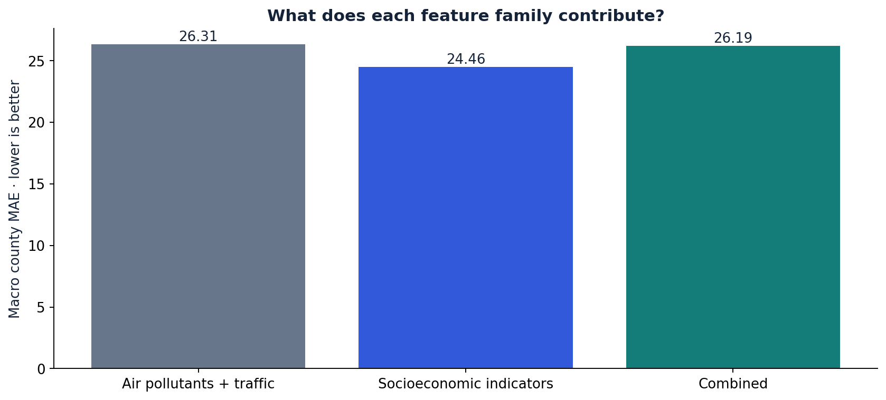
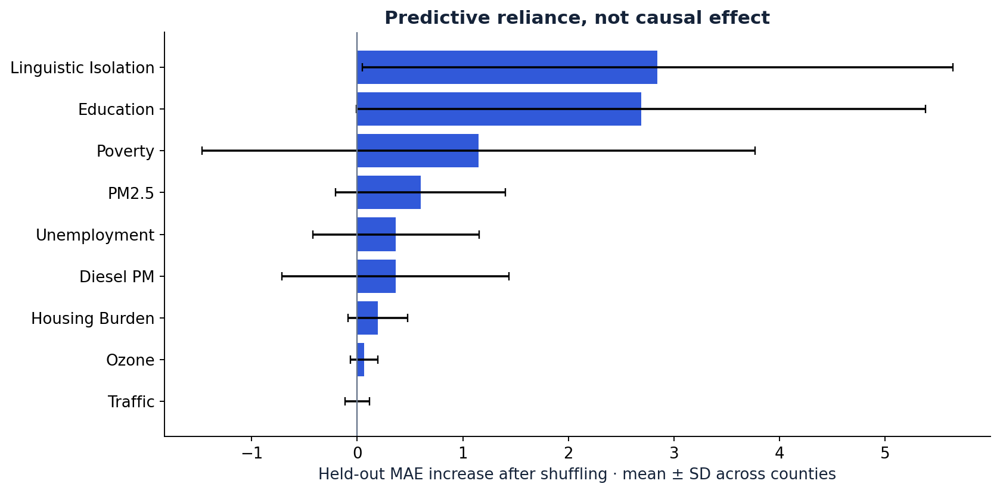

Can a model generalize
beyond its own geography?
An interpretable study of pollution, socioeconomic conditions, and tract-level asthma indicators. Every headline prediction comes from a model that never trained on the tract’s county.
Performance you can inspect
The selected procedure chooses its model family and hyperparameters using inner training folds. Each county is tested once. MAE uses the asthma indicator’s scale; R² is pooled across all tracts.
| Model | Macro county MAE ↓ | Pooled R² ↑ | Worst county MAE ↓ |
|---|
Where does the model struggle?
Tract representative points, colored by absolute error. Darker = larger error. No boundary polygons.
Observed vs. predicted. Dashed line = perfect fit. Hover or tap a point for the tract and its error.
Select a county or inspect a point to explore the held-out predictions.
What adds predictive signal?

The same nested selection procedure runs separately for each feature family. This is an association study.
Predictive reliance

Shuffling features on held-out counties measures predictive reliance. Correlated variables can mask importance. Error bars show county variation.
Built around the failure modes
Unique tracts, fixed county labels, a dataset hash, negative placeholder detection, and a feature allowlist. Missing target values are excluded.
Leave one county out. Tune four model families with three grouped inner folds. Fit imputation and scaling inside each fold.
Report every county, poverty slices, feature ablations, residuals, and descriptive county bootstrap stability. Preserve the split manifests and predictions.
This is a historical, cross-sectional research demonstration. It does not establish pollution’s causal effect, predict an individual’s health, or forecast future asthma. The extract contains DRAFT CES fields and undocumented 2023 dates; exact official-release provenance is unverified. County holdouts provide no spatial buffer, and CalEnviroScreen labels are themselves spatially modeled.
Read the full results, machine-readable leaderboard, county metrics, and data audit. Methodology references: OEHHA asthma indicator and scikit-learn grouped validation.